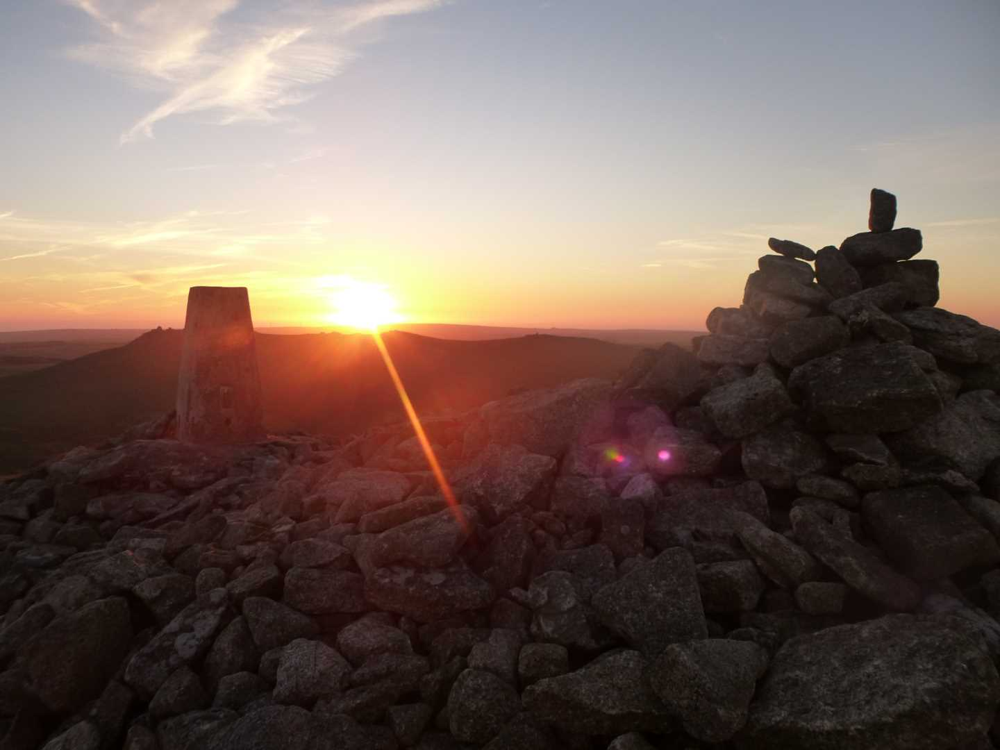
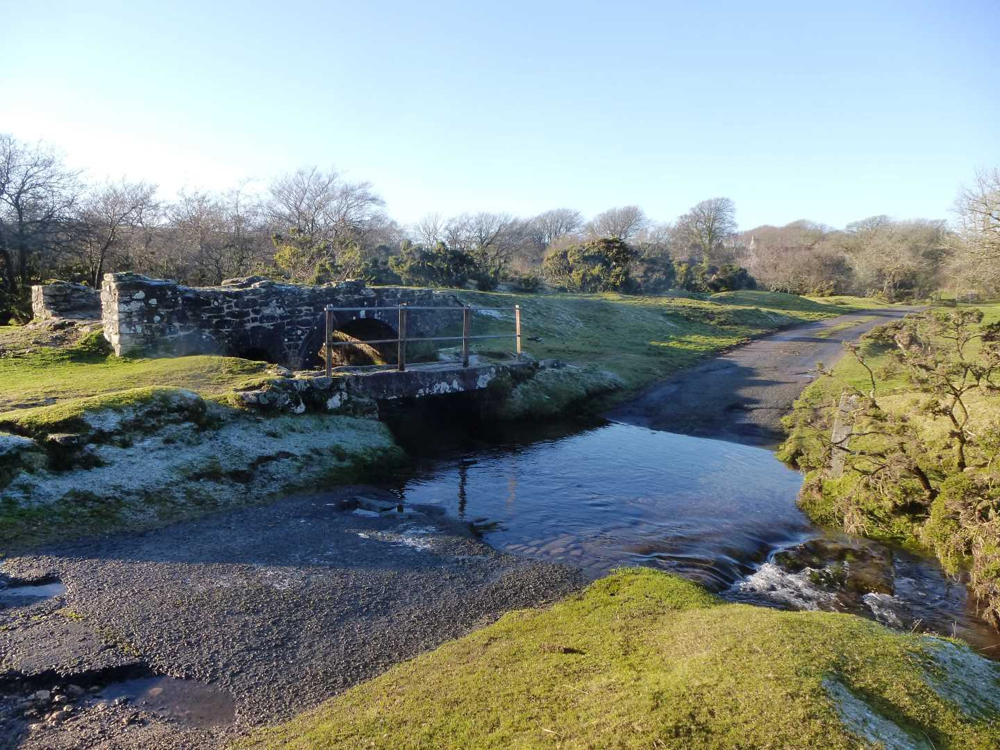

Start Ref: 1840 8268
End Ref: 1840 8268
Distance: 6 miles
Time: 3.5hrs
We start this walk by leaving our car by the picturesque footbridge and stream in the hamlet of Bowithick (on the road between Davidstow Moor and Altarnun. Heading in a South Westerly direction we follow the little track out onto the moor, following (on our left) the remaining walls of what would have been a reservoir. These walls are now crumbling and overgrown, but as the springs that fed it still run this can be a slightly boggy area.
Once across this section we continue in a South Westerly direction heading up the hill (Buttern Hill) which we can see in front of us. At the summit of this hill (346m) we find the remains of an ancient burial cairn, and we also get our first clear view of Bronn Wennili and also of the Source of the River Fowey. From the summit, head in a more Westerly direction so that you go to the North of the Source, to avoid wet feet! This river flows down through Lostwithiel and on down to meet the sea at Fowey, and actually gave this moor its original name (Foye Moor).
From here we want to head again in a SW direction, but not directly towards the summit of Bronn Wennili, as there is a fencing separating High Moor and Brownwilly Downs, which only gives us access (on this side) from a more Northerly approach. Once through this gate the track is easily visible as it now heads with increasing steepness up to the summit. If you check on your map there is a Letterbox here which you can stamp your map with. This is pre Geocash technology - and both mine and my fathers maps have the stamps.
At the highest natural point in Cornwall, stop and take in the views, fly your Cornish flag for a photo and if it`s your first ascent have a drink to celebrate (not too much as you still have to get back - a lesson my wife and sister-in-law learnt after I have plied them with rum at this point!!).
From here, you can see the next Tor over. This is Rough Tor, pronounced Row (as in an argument) Tor. Once we have stopped a while, we descend by the same route, and pass through the same gate and now head off in a North Easterly direction to arrive again at the Northern edge of the Source of the River Fowey.
Here though we are going to alter our route back. This can be a little bit of a strain on the ankles but is rewarded with a beautiful valley. Instead of heading up Buttern Hill, we are going to skirt around its Northern edge and follow some of the ancient leats that are still visible today. At this time of year there can still be frost underfoot even in the afternoon. As we continue along this Northern edge (but start heading East as we follow around) the hill sides become steeper and we start to see old field walls on the other side of this small valley. As we come around the flanks of the hill we again look down on the boggy section which we first walked through, and make our way back to the path, and in turn, heading North East, back to our car.
The area that we have left the car is a lovely open section, with Penpont Water running through it. The old granite bridge and ford is a beautiful area to come if only for a picnic, but also makes for a lovely finish spot (and maybe a picnic as well).
I hope that you enjoy, this rite of passage walk and area.